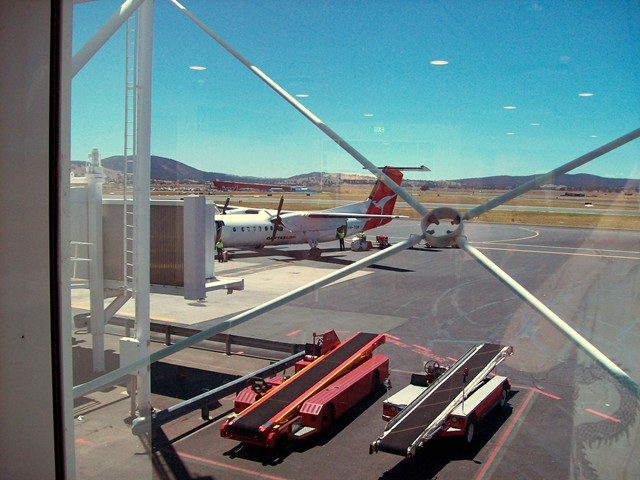
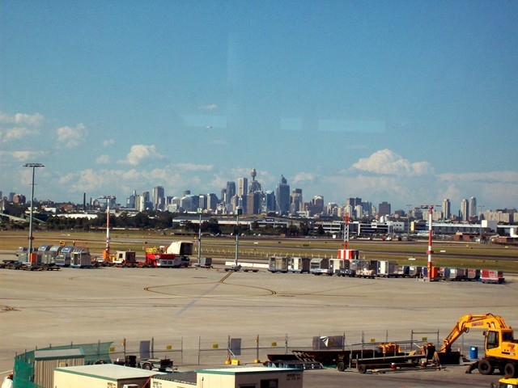
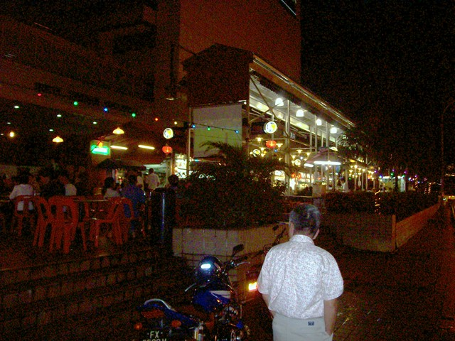
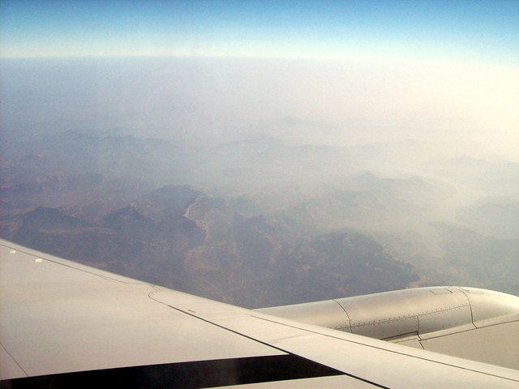
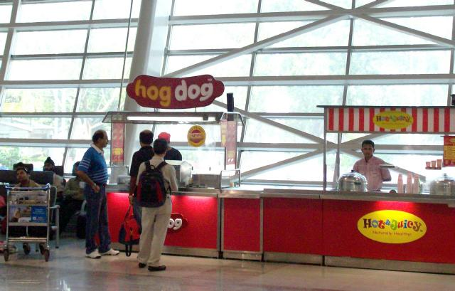
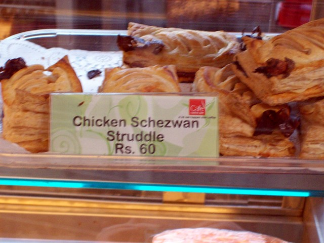
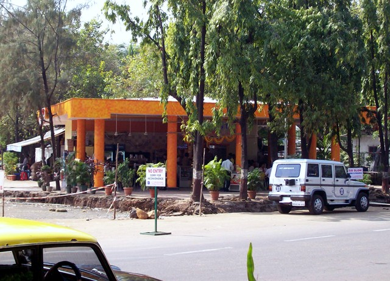
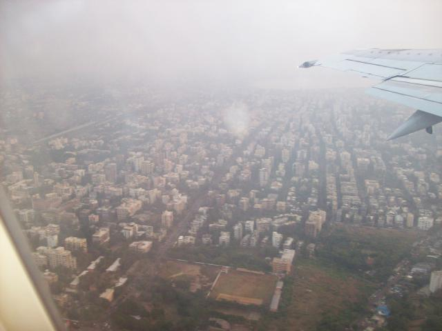

Canberra To Kolkata
Had always wanted to go to India, especially with only 5 hours of jet lag from Oz, but didn't want a package tour and was aware I couldn't handle the logistics myself--didn't know how India works. Then I met Ram, an fellow SRFer who lives in Ranchi and swung by Canberra while job hunting. Ram is a mining engineer (explosives) who was laid off in a merger several years back, and being a few years from retirement age, has has problems finding anything else. He was offering exactly when I wanted--you put together the itenerary, he'll work the logistics and accompany you on the trip to grease the skids on language and cultural barriers. Ram suggested that he handle the transactions. He paid for everything, kept it all in a log book, and every few days I got cash from an ATM and squared up.
The bottom line: Everyone who'd been to India either loved it or hated it. I managed to do both. I often felt like I was in water halfway up my eyeballs, seeing third-world decay and squalor, corruption and ineptitude, out of the bottom half of my eyes, and angels through the top half. What you see is utterly incongruous with what you feel.
 |
 |
Departing
Canberra - 1:30 PM |
Arriving Sydney - 2:30 PM Observation: There are not men's and women's toilets, but male and female toilets. Strictly segregated, of course, so there aren't little toilets running all over the airport. It's cool knowing when I check out of Oz with Customs exactly what records are generated, and being able to look them up when I get back. |
 |
 |
| Arriving Singapore Hotel - 1:30 AM The flight arrived an hour late, while Singapore Air moved the morning departure two hours earlier. I'm paying $175 for three hours' sleep. On arrival, scowling little women with guns in the jetway; in the transfer lounge, soldiers with AKs in triangles covering each other's backs. The newspaper has news about everywhere but Singapore. Except for the 17-yo who was sentenced to a year and $6K for piggybacking on a neighbor's wifi. The city goes all night; here is a lively crowd of young Asians eating chili crabs. Singapore has always been the iron fist. Observing the fate of other Chinese minority olgarchies in Asia has surely not sweetened their mood. They hang Aussies and cane Americans. The cabbies are yacky and cheerful, though, and they evidently hang no one for lane splitting. Bruce Stirling (cyberpunk author) called Singapore "Disneyland with the death penalty". Another writer called it "The only shopping center that's a country." It stretches along a beautiful bay, but still, nothing about it made me want to come back. |
Sunrise over Sumatra - 7:30 AM The Singapore Airlines stewardesses were swan-necked in blue silk costumes. The food was Chino-Indian, and first class in coach. Airport taxis were impressive too. There's a taxi line, and a set of diagonal slots. As you step off the curb, the next taxi pulls into the slot. You get there at the same time, jump in, and the taxi pulls forward to the airport exit. A smoothly oiled machine. The iron fist doesn't extended to speeding or lane-splitting. Oh yeah--don't get the durian gelato at the airport. |
Thought Mumbai International would be the one modern thing in India, but it's worn, cracked, grimy. (There are signs on the tarmac proclaiming it an ISO9001-compliant airport though, and there's a sub-fire-station, in case you should have a sub-fire.)
Getting to the domestic terminal involved clearing four checkpoints with soldiers carrying rifles that served against the Kaiser, sometimes slung with fencing chain. The last one, who checked that I had a domstic ticket, laboriously spelled out my destination. "Kolkata," he said approvingly. I'm not sure if he was approving a westerner going to the tired old city that the outsourcing revolution forgot, or himself for figuring out the word.
Transferring also brought my first Indian scam. The baggage guys loaded my bags into the transfer bus and it became "We're not going without a tip". I didn't have Indocash, so I gave them an Ozdollar, a ridiculous sum that they eyed in disgust as though prepared to reject it. They scampered on board, where they proved to be friends of the real porters, who, wearing their "No tips please" shirts, unloaded the bags.
First impression: Everyone's relaxed and having fun, like Mexico. And some people have that drenched-with-love look you see in people emerging from long meditations. How hypnotized we are by our own little challenges! Everything is shabby and improvised. And never have one person doing a job when three will do.
So here I am in Mumbai ready for my first authentic Indian meal.
 |
 |
This is the first thing to hit my eye Jet Airways Domestic Terminal - Mumbai - 2PM There's an in-joke here for SRFers. |
Here's another airport dish. Jet Airways Domestic Terminal - Mumbai |
 |
 |
So I trucked across the street to Balaji, which turned out to be a well-regarded vegetarian chain. Felt bad about hogging a table for four, but groups of cabbies kept plunking down for chai. Had read about that, but forgot that in India tables are by default shared. Went to the bathroom and washed my hands. Then had to confront the fact that my hands were dirty because I'd washed them. Used the alcohol gel hand disinfectant Ram recommended that I bring. I rather over-ordered; forgot that curds rice is a dish in itself, rather than something to put saag paneer on top of. I felt embarrassed pigging out while the cabbies were making do with shotglass-sized chais for lunch, but figured I should eat it since children are starving in India. Then a woman waddled by with a sari the size of the solar system and I felt better. |
Kolkata - On Approach - 7PM Speaking of tables, there's a saying credited to a professor of economics: "In Bejing, corruption is under the table. In Jakarta, it's over the table. In Manila, the table is part of the deal."
Got in an hour late to find Ram frantically waiting for me. He embarrassed the hell out of me by garlanding me and sprinkling petals over my head. (When we reached the ashram, I found the garland a better home.) |